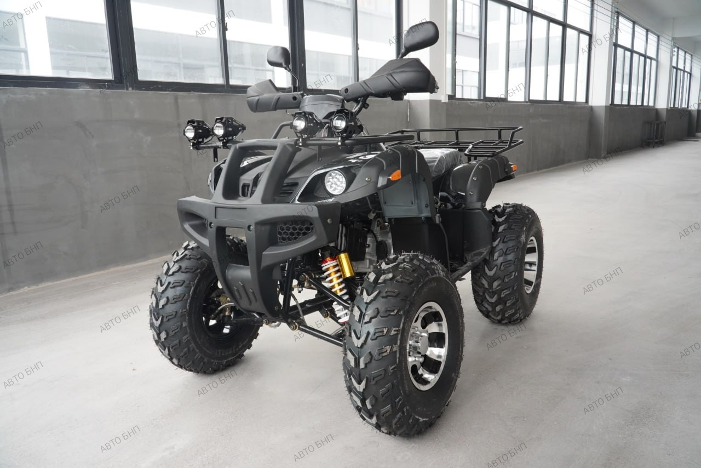
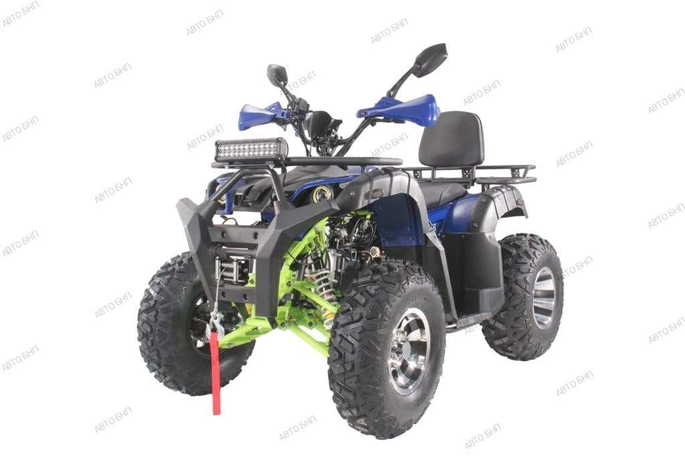
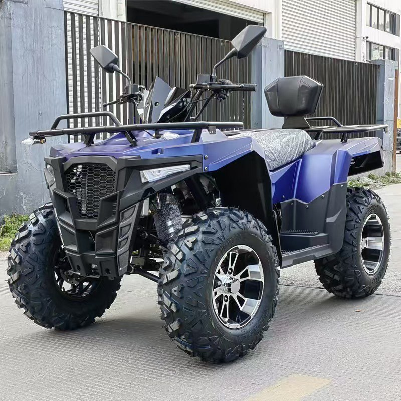
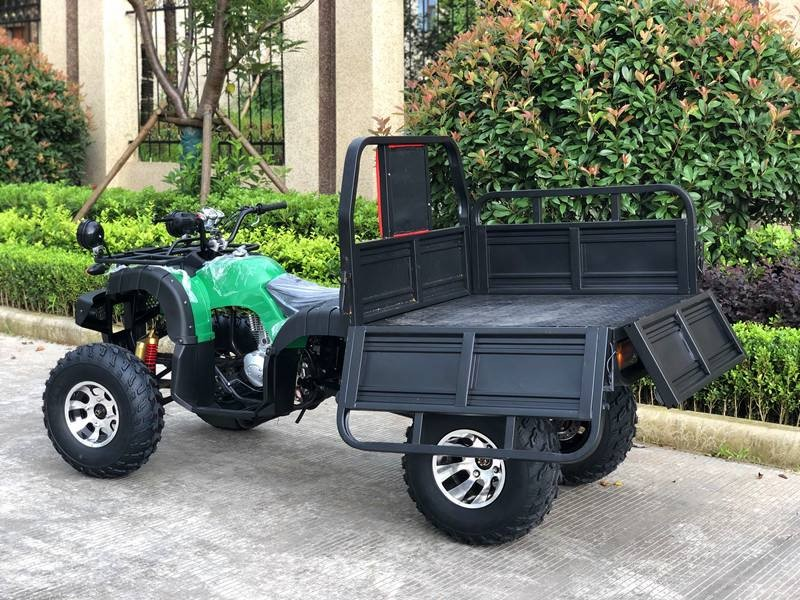

Квадроциклы
Квадроцикл BNP STRYKER 125
- Двигатель: 125куб.см
- Тип Двигателя: Бензиновый, 1-цилиндровый, 4-тактный
- Максимальная скорость до 55км\ч
- Воздушная система охлаждения
- Стартер: Электростартер
- Трансмиссия: Вариатор, с возможностью ручного переключения: 3 вперед, 1 назад.
- Тип привода: Задний, цепь+звёзды
- Длина/Ширина/Высота: 1450/750/930 мм
- Колёсная база: 870 мм
- Высота по седлу: 610 мм
- Клиренс (измеряется по самой нижней точке – ведомая звезда): 120 мм
- Объем бака: 3,4 литра.
- Стальные диски, диаметр 8 дюймов.
- Шины: бескамерные надувные. Передние: 19х7.00-8. Задние: 18х9.5-8
- Тормоза: передние дисковые гидравлические. Задние: 1 осевой тормоз, дисковый гидравлический.
- Вес: 82 кг
Полная стоимость: 7190 рублей
Через финансовых партнеров: от 173 руб. в месяц до пяти лет без предоплат и первых взносов с возможностью досрочного погашения.
Вариант рассрочки от нашей компании: 2876 руб. предоплата, оставшаяся сумма на 12 месяцев по 359,5 рублей.
Квадроцикл BNP STRYKER 200
- Двигатель: 200куб.см с балансировочным валом.
- Тип Двигателя: Бензиновый, 1-цилиндровый, 4-тактный
- Максимальная скорость до 65км\ч
- Воздушная система охлаждения
- Система запуска: Электрический стартер и ручной стартер
- Максимальная мощность: 17 л.с
- Система зажигания: Электронное (C.D.I)
- Система подачи топлива: Карбюратор
- Трансмиссия: Вариатор F-N-R
- Тип привода: Цепь на заднюю ось
- Передняя подвеска: 2-х рычажная, шаровая с 2-мя амортизаторами.
- Задняя подвеска: Маятниковая подвеска с моноамортизатором
- Тормоза (перед/зад): Дисковые/Дисковые
- Объем топливного бака: 6,5л.
- Топливо: АИ 92
- Размер шин (спереди/сзади): 23х7-R10 / 22х10-R10
- Особенности комплектации:лебедка, дополнительная светодиодная фара, литые диски, линзованные передние фары, электронная приборная панель, клаксон, удобное расположение рычага переключение передач, модернизированные амортизаторы, защита рук, зеркала заднего вида, спинка для пассажира, фаркоп, USB выход, поворотники, зарядное устройство для аккумулятора.
- Вес: 90 кг
Полная стоимость: 9990 рублей
Через финансовых партнеров: от 240 руб. в месяц до пяти лет без предоплат и первых взносов с возможностью досрочного погашения.
Квадроцикл BNP STRYKER 300
- Двигатель: 300куб.см
- Двигатель одноцилиндровый, 4 тактный, с воздушным охлаждением 1+1 автоматическая коробка передач
- Максимальная скорость до 80км\ч
- Воздушная система охлаждения
- Тормоз: передний барабанный и задний гидравлический дисковый тормоз
- Шины: Передние внедорожные 23х7-10/задние 22х10-10
- Аккумулятор 12В,9Ач
- Задний ход: есть
- Колёсная база: 96 см
- Высота сиденья: 86 см
- Дорожный просвет: 14 см
- Размер 160*90*110см
- Емкость бака: 8л
- Обогреватель ручек: есть
- Спинка: есть
- Чехол для рук + задние зеркала
- Разьем USB: есть
- Свет: Освещение гоночного типа
- Фаркоп: есть
- Грузоподъёмность 250-270 кг
- Вес: 100 кг
Полная стоимость: 17000 рублей
Через финансовых партнеров: от 413 руб. в месяц до пяти лет без предоплат и первых взносов с возможностью досрочного погашения.
Квадроцикл BNP STRYKER Cargo
- Двигатель: 250куб.см
- Режим запуска: Электрический старт
- Максимальная скорость до 80км\ч
- Воздушная система охлаждения
- Метод зажигания: CDI
- Режим вращения: Валовая передача
- Счетчик: Цифровой счетчик
- Выхлопная труба: Железная выхлопная труба
- Тормозная система: Передний барабанный тормоз, задний гидравлический дисковый тормоз
- Система амортизации: Передняя гидравлическая/задняя гидравлическая амортизация
- Размер шин: 23×7-10 (передние), 22×10-10 (задние) с железными колесами
- Емкость масляного бака: 5 литров
- Пусковой ток: 9 Ач
- Колесная база: 795 мм
- Высота шасси: 170 мм
- Размер транспортного средства: 2560×1140×1350 мм
- Размер откидного кузова: 1000×1000×300 мм
- Максимальная грузоподъемность: 500 кг
- Вес: 200 кг
Полная стоимость: 13000 рублей
Через финансовых партнеров: от 315 руб. в месяц до пяти лет без предоплат и первых взносов с возможностью досрочного погашения.